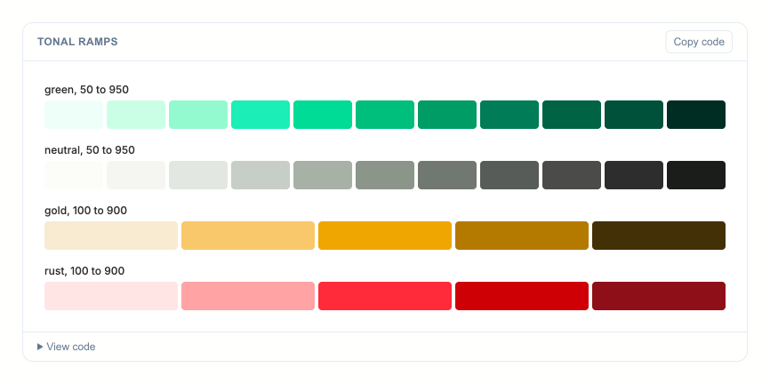
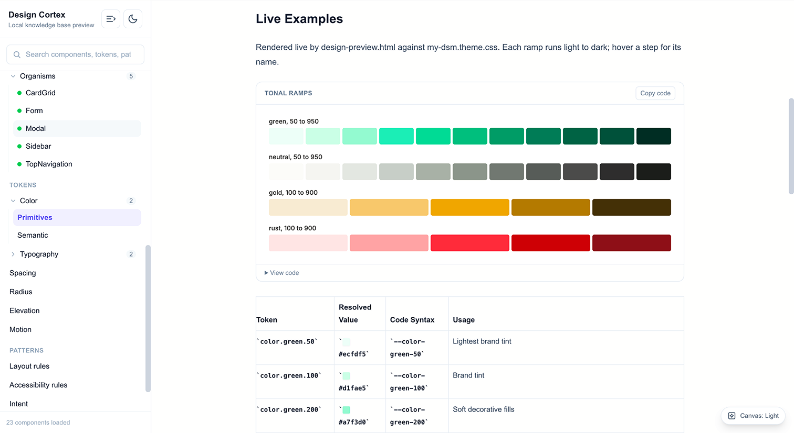
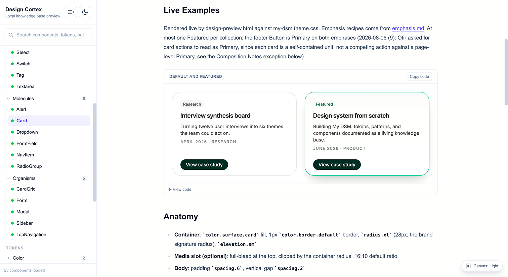
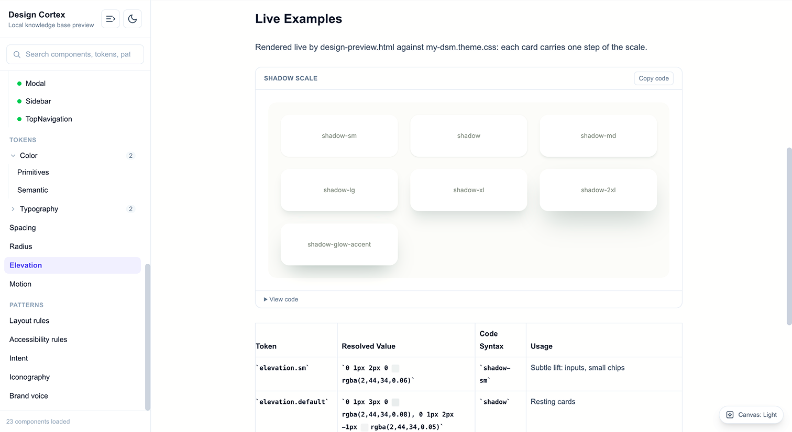

Year
2026
Role
Personal project
Duration
3 days
Scope
Design Tokens, Component Architecture, Figma Variables, Documentation, Claude Code, Figma MCP
My DSM: a personal design system built token-first with Claude Code and a live Figma connection, in three days that became the foundation for everything I've built since, including this site.

I unify design systems across four business lines at the bank, but I never had one of my own. That gap started to bother me while I was closing a personal skill gap in AI-assisted design. I found Design Cortex, a design-system documentation structure someone else had built and published, and used it as the base to build a system that was actually mine.
I wanted real hands-on fluency with AI tools, not just the ability to point my team toward them.
Years spent unifying design languages for other people's products, with nothing built the same way for myself.
Adopted an existing documentation structure and reshaped it around my own tokens, components, and voice.
No shortcuts, no jumping ahead. Three nights, barely a break, building and documenting every single piece the same disciplined way.
Primitives, then semantic color, type, spacing, and motion, the layer everything else binds to.
Live examples, anatomy, variants, when to use it and when not to, accessibility notes, on every single piece. Reads like a living Storybook, not a static file.
Pushed group by group into Figma through Claude Code and a live Figma MCP connection, so design and code stay in sync instead of drifting apart.



Once I trusted the system, I built pages for my old portfolio with it. For this site, I duplicated the whole DSM rather than touch the original, and redefined color, type, and button style inside Claude Code. I view the live system through Cursor, opening it as a local server, but everything is still built in Claude Code.
A separate copy, so the original system stays untouched no matter what a specific site needs.
Cursor only opens the local server to look at the live docs. Claude Code is what actually builds, so the two never compete for the same job.
This page's type, color, and buttons are running on that duplicated system right now.
I've built and unified design systems wired to real production code for years, at the bank, just never with AI doing the work alongside me. Doing that once myself, tokens to components to Figma, is what finally made "trust the system" feel like something I understand firsthand, not just something I ask other people to do.